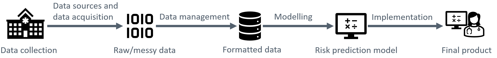
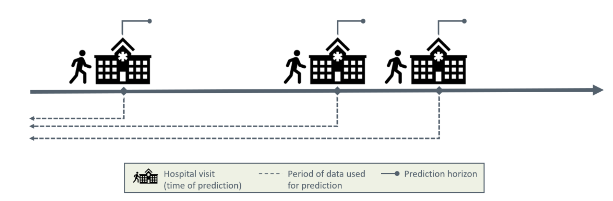
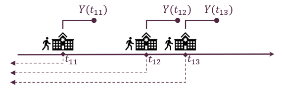
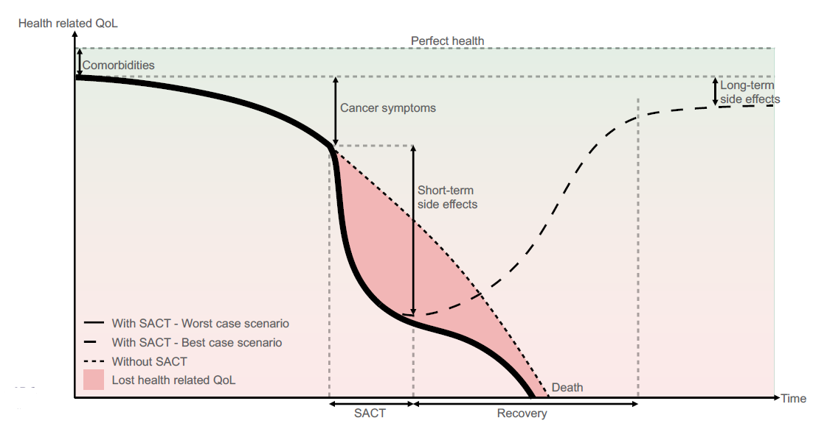

Development and Implementation of Machine Learning Models for Dynamic Risk Prediction in Health Care Applications
The participants are expected to have basic knowledge on regression analysis as well as programming experience in a statistical software tool, such as R or Python.
Access Sandbox resources
Our first choice is to provide all the training materials, tutorials, and tools as interactive apps on UCloud, the supercomputer located at the University of Southern Denmark. Anyone using these resources needs the following:
- UCLOUD: a Danish university ID so you can sign on to UCloud via WAYF1.
- REQUIREMENTS: Basic ability to navigate in Linux/RStudio/Jupyter. You don’t need to be an expert, but it is beyond our ambitions (and course material) to teach you how to code from zero and how to run analyses simultaneously. We recommend a basic R or Python course before diving in.
- Notebooks: Notebooks and scripts can be downloaded here:
- COURSE EVALUATION SURVEY: The Novo Nordisk Foundation funds the Sandbox project and is interested in the outcomes of our training activities, so we really appreciate your responses!
Course Agenda
Part 1 - Introduction
- Course Overview
- Introduction to Dynamic Risk Prediction
- Example: 30-day Mortality in Advanced Lung Cancer
Part 2 - Data Sources and Data Acquisition
- Data and Metadata
- Health Data Providers in Denmark
- Coding and Classification Systems
- Exercises
Part 3 - Data Preprocessing
- Establishing the Data Analysis Protocol
- Challenges in Data Handling
- Data Representation Techniques
- Splitting Data for Model Evaluation
- Feature engineering
- Exercises
Part 4 - Modelling
- What is Predictive Modelling
- Performance Metrics
- Predictive Models
- Model Training
- Utility and Explainability
- Exercises
Part 5 - Implementation
- Hosting and Access to Data
- FHIR
- Validation
- Exercises
Course Overview
This course provides an overview of the principles of dynamic risk prediction in healthcare applications. However, most of the concepts introduced in this course are general to predictive modelling and can be applied outside dynamic risk prediction in healthcare.
The course discusses key elements of the journey from data acquisition to implementation of a dynamic risk prediction model, as illustrated in Figure 1.
Figure 1: A simplified workflow for a dynamic risk prediction model.
The course material is divided into five core modules:
- Introduction:
This module introduces the concept of dynamic risk prediction.
- Data Sources and Data Acquisition:
This module is an introduction to the data required for dynamic risk prediction. Specifically, the definition of data, the characteristics of health data, potential associated issues, and major data providers in Denmark are covered.
- Data Preprocessing:
This module focuses on transforming raw health data into a clean, analysis-ready format. Common data challenges will be examined, and the reasons for data preprocessing will be explained. Furthermore, strategies for addressing the presented challenges while preparing the data for analysis will be discussed.
- Modelling:
In this module, the focus is on the process of building predictive models. It includes an introduction to both basic and advanced dynamic predictive models, such as logistic regression, decision trees, and neural networks. Additionally, model performance metrics, utility, and hyperparameter tuning techniques will be introduced.
- Implementation:
The final module explores the challenges of implementing predictive tools in clinical settings. Topics include technical considerations such as system hosting and integration with live data sources, including an introduction to the Fast Healthcare Interoperability Resources (FHIR) standard.
Introduction to Dynamic Risk Prediction
In general, risk prediction refers to estimating how likely a binary future event is based on present, relevant information, commonly through statistical or machine learning models. In healthcare, risk prediction often focuses on estimating an individual’s likelihood of developing a disease or experiencing a medical event to guide prevention and treatment. The estimation is typically based on a variety of variables, such as clinical, demographic, and lifestyle data.
Dynamic risk prediction enables repeated risk estimation over time, allowing the patient’s risk to be updated as new clinical information becomes available. Using data available up to the time of prediction, the prediction model outputs an estimate of the individual experiencing the event within a specified prediction horizon for each prediction time, as illustrated in Figure 2. Examples of binary outcomes include hospitalisation within the next six months, response to treatment within one month, or death in the following week for a patient in an intensive care unit.

Figure 2: Illustration of dynamic risk prediction.
Dynamic risk prediction models are relevant because they can:
- Continuously monitor changes in patient risk over time.
- Inform timely interventions by providing insights that assist clinicians in making treatment decisions aligned with the patient’s current risk level.
- Contribute to more efficient allocation of healthcare resources.
To build a dynamic risk prediction model, we need:
- A cohort of patients with clinical outcomes and relevant data recorded over time.
- Prediction time points \(t_{ij}\) that denote the specific time at which a prediction was made for the \(i\)’th patient at the \(j\)’th time point.
- A binary outcome \(Y(t_{ij})\) is defined at each prediction time \(t_{ij}\), indicating whether the event of interest occurs within the chosen prediction horizon.
- Static data \(X_i\) for the \(i\)th patient, i.e. characteristics that do not change over time, such as biological sex, age at diagnosis, or genetic factors. Static data are not a requirement for making dynamic risk prediction but is often available and relevant to include.
- Time-dependent data \(Z_i(t)\) for the \(i\)th patient are measurements that vary over time \(t\), such as weight, laboratory values, or medication prescriptions.
Based on \(Z_i(t)\) for all \(t \leq t_{ij}\) and \(X_i\), the aim is to predict the binary outcome \(Y(t_{ij})\) at some time point after \(t_{ij}\).
Predictions may be generated at regular intervals, for example every six hours, or irregularly in response to specific events such as a hospital visit or new test results. Figure 3 illustrates dynamic risk prediction with irregularly triggered predictions.

Figure 3: Dynamic risk prediction with irregularly triggered prediction times.
Example: 30-day Mortality in Advanced Lung Cancer
Patients suffering from cancer may receive systemic anti-cancer treatment (SACT) to slow disease progression and improve their quality of life. While SACT can provide substantial benefits, it may also cause serious and in some cases fatal adverse effects. Administering SACT requires balancing the potential survival benefits against adverse side effects and impacts on quality of life, as illustrated in Figure 4. In the best-case scenario, particularly within palliative care, SACT can provide the highest possible quality of life alongside effective treatment outcomes. In the worst-case scenario, the overall outcome may be less favorable with SACT than without it, potentially leading to greater discomfort and even a shorter lifespan compared to supportive care alone.

Figure 4: Model of health-related quality of life for a patient with limited life expectancy. Image credit: Vesteghem, C. (2022)
To decide whether to initiate, continue, or stop SACT is a complex and difficult decision. To support this decision-making process, the development of dynamic predictive models may be a valuable tool. In a study by Vesteghem et al. (2022), the 30-day mortality risk for patients with advanced lung cancer was predicted dynamically for patients in the North Denmark Region. Extensive electronic health record and administrative data were used in the predictive models, including demographic information, cancer diagnosis, comorbidities, treatments, and biological tests. A new risk estimate was provided each time a patient was administered a drug at the Department of Oncology, Aalborg University Hospital.
Exercise
Consider patients with Crohn’s disease, a chronic inflammatory bowel disease with a fluctuating course, where periods of remission are interrupted by disease flares that may require hospitalization. Because patients have repeated contacts with the healthcare system (e.g., outpatient visits, medical treatment, and surgery), clinical data is collected over time. This includes biomarkers (faecal calprotectin, C-reactive protein), medication data, healthcare utilisation, etc. Further, information about age, sex, and comorbidities at time of diagnosis is available. We build a prediction model that estimates the risk of hospitalisation within the next year each time the patient is in contact with the hospital.
Based on what has been presented in this chapter, please choose the correct option for the questions:
- 30 days
- One year
- irregularly
- regularly
- Time of hospitalisation
- Time of any contact with hospital
- Time of biomarker measurement
- Yes, because they are strong treatments.
- Yes, predictors are always causal factors.
- No, models identify associations, not necessarily causal effects.
- No, models cannot include treatment variables.
- To support clinical decision-making.
- To determine causal treatment effects.
- To replace clinician judgement.
To proceed to the next section of the course, please click the button below.
Continue to Data Sources and Data Acquisition